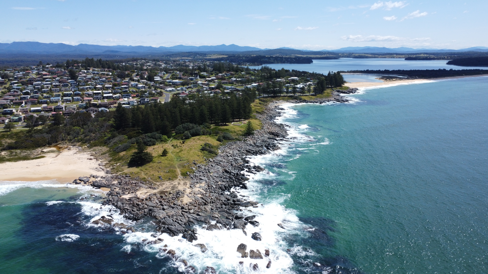
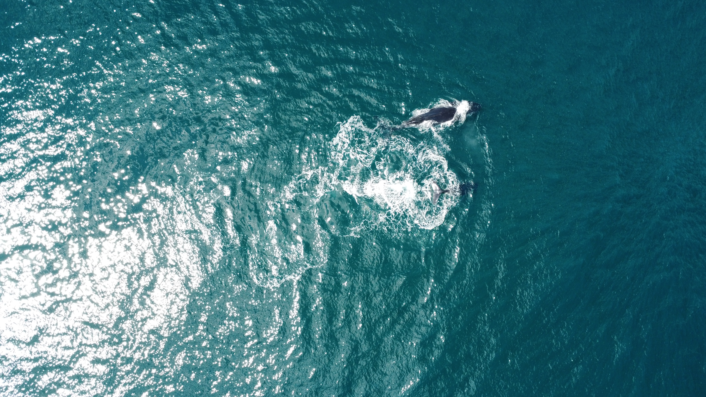

Conor Gleeson
Conor is the founder of Boyne Geospatial — a visual storyteller with a background in spatial science that gives every shoot a different kind of edge. He approaches every project with the same question: what does this place, this person, or this moment actually look like when you truly understand the terrain?
Before founding Boyne Geospatial, Conor spent two years working in rural New South Wales, Australia — leading fieldwork programmes across remote and challenging terrain. That experience in the field, across diverse landscapes and under real project pressure, shaped how he thinks about location, perspective, and what makes an image worth capturing.
Flying a DJI Mavic Mini 4 Pro and shooting on a Canon 90D, he combines aerial and ground-level work to tell complete stories. His spatial background informs every decision — from how a site is scouted to where the camera is placed — bringing a level of location intelligence to visual content that most crews don't have.
Now back in Ireland and based in Navan, County Meath, he founded Boyne Geospatial to tell the stories of the people, places and projects that deserve to be seen — with the precision of someone who truly understands them.
Get in Touch

